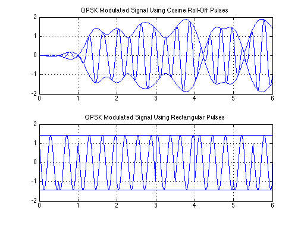
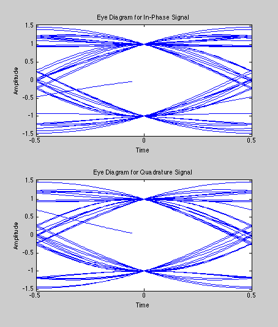
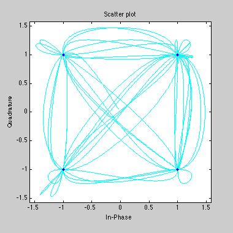

QPSK Modulated Signal Using Cosine Roll-Off and Rectangular Pulses
Copyright 2007 Telecommunications Lab
Contents
N=128; Fd = 2; Fs = N * Fd; Delay = 3; Symb = 50; M = 4; msg_orig = randsrc(Symb,1,[0:M-1],5555); msg_tx = qammod(msg_orig,M); [y, t] = rcosflt(msg_tx, Fd, Fs,'fir/normal',.5); f=3; y1=real(y).*(cos(2*pi*f*t)')-imag(y).*(sin(2*pi*f*t)'); env=abs(y); envneg=-env; subplot(2,1,1); plot(t,y1,'b','LineWidth',1);hold on; plot(t, env,'b',t,envneg,'b','LineWidth',1.5);grid on; title('QPSK Modulated Signal Using Cosine Roll-Off Pulses'); axis([0 6 -2 2]); y2 = rectpulse(msg_tx,N); y3=real(y2).*(cos(2*pi*f*t(1:6400))')-imag(y2).*(sin(2*pi*f*t(1:6400))'); env2=abs(y2); envneg2=-env2; subplot(2,1,2); plot(t(1:6400),y3,'b','LineWidth',1);hold on; plot(t(1:6400),env2,'b',t(1:6400),envneg2,'b','LineWidth',1.5);grid on; title('QPSK Modulated Signal Using Rectangular Pulses'); axis([0 6 -2 2]); hold off;
Eyediagram
yy = y(1+Delay*N:end-Delay*(N+2)); h3 = eyediagram(yy, N);
Scatter Plot
h7 = scatterplot(yy, 1, 0, 'c-'); hold on; scatterplot(yy, N, 0, 'b.',h7); hold off;